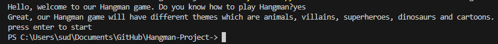
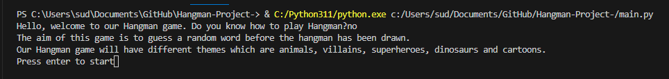
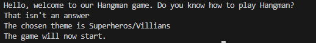

| Test/Input | Expectation | Output |
|---|---|---|
| "yes" | It should tell the themes of the game and ask to press enter to start? |  |
| "no" | It should explain how to play the game and then tell the different themes then ask to press enter to start |
 |
| "" | It should say that isn't an answer? |  |